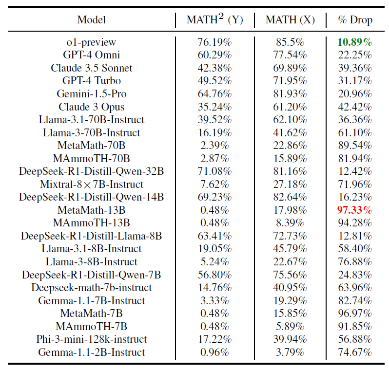

Comparison of Zero-Shot Performance of Various Models on MATH and new Dataset MATH2 - This figure illustrates the zero-shot Chain of Thought (CoT) performance of both open-source and proprietary models on two different datasets: MATH and MATH2 - our generated dataset. Across the board, models demonstrate a lower performance on the generated dataset compared to MATH. Models show consistent drops in performances relative to MATH when evaluated on MATH2.
Relative drops in performance as compared to MATH
o1-preview demonstrates the least drop in percentage terms (10.89%) whereas MetaMath-13B shows the highest relative drop (97.33%). 
Surprising relationship with performance on MATH
We observe that the performance of models on MATH2 follows, in most of the cases, an approximately perfect quadratic (Y = X2) relationship with their performance on MATH. This implies that that how well a model generalized to MATH2 is agnostic to its training procedure. We hypothesize the following explanation: Suppose there are N skills and si denotes the success rate of the model at correctly applying the i-th skill. Then, its X value should reflect the average of the si's. Furthermore, on a random question using the ith and jth skill, the probability that the model correctly answers it should be sisj, since it has to successfully apply both skills. the ith and jth skill, the probability that the model correctly answers it should be si sj, since it has to successfully apply both skills. If the questions are created using pairs of skills chosen randomly and independently, then the Y value will be the average value of sisj's, which by independence will be roughly X2. Although, some models do deviate non-trivially from the perfect quadratic relationship such as DeepSeek-R1-Distill-Llama-3-8B (highest positive deviation), o1-preview, Deepseek-R1-Distill-Qwen-32B and Claude-3.5 Sonnet (highest negative)
MATH2 questions act as superior in-context examples for solving MATH
The table given below compares the performance of models on MATH under three prompting strategies. MAmmoTH 4-shot CoT uses exemplars from the MAmmoTH (Yue et al., 2023) evaluation suite. Skill-Based 4-shot CoT (Didolkar et al., 2024) retrieves exemplars from MATH based on required skills (identified by GPT-4). Proposed 4-shot CoT selects MATH2 exemplars where at least one skill matches the target question. Using MATH2 exemplars improves performance, with gains up to 13.72% over baseline (Llama-3.1-70B-Instruct (Dubey et al., 2024)).
Performance on human modified vs un-modified subsets of MATH2
Models find it more difficult to solve the subset of MATH2 questions which were modified by human verifiers before making it to the dataset as compared to the questions that were taken directly as they were generated by the AI pipeline (i.e. were not modified at all). Infact, the human modified subset is even more difficult than Level-5 MATH, i.e., the most difficult level of MATH.